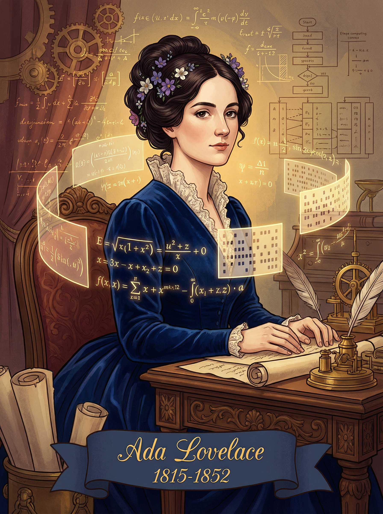

👩💻 Mujeres en Sistemas
Pioneras que revolucionaron la informática y la programación
Introducción
Las mujeres han jugado un papel fundamental en el desarrollo de los sistemas informáticos y la programación. Desde Ada Lovelace, considerada la primera programadora del mundo, hasta Grace Hopper y Hedy Lamarr, estas pioneras rompieron barreras y sentaron las bases para la era digital que hoy disfrutamos.
Ada Lovelace (1815–1852)

Primera Programadora de la Historia
- Nació en Londres, Inglaterra en 1815
- Hija del poeta Lord Byron
- Escribió el primer algoritmo para ser procesado por máquina
- Trabajó con Charles Babbage en la Máquina Analítica
- Sus notas eran tres veces más largas que el artículo original
- Falleció a los 36 años, dejando un legado eterno
Frase Célebre
"La Máquina Analítica teje patrones algebraicos así como el telar de Jacquard teje flores y hojas."
Su Mayor Contribución
Ada Lovelace escribió el primer algoritmo destinado a ser procesado por una máquina, lo que la convierte en la primera programadora de la historia. Su trabajo fue tan avanzado que sus notas contenían conceptos que no serían redescubiertos hasta el siglo XX.
Grace Hopper (1906–1992)
Madre de la Programación Moderna
- Almirante de la Marina de los EE.UU.
- Inventó el primer compilador de lenguaje de programación
- Desarrolló COBOL, un lenguaje que aún se usa hoy
- Acuñó el término "bug" en programación
- Trabajó en computadoras UNIVAC y Mark I
- Fue pionera en hacer la informática accesible
Legado Duradero
Grace Hopper revolucionó la programación al crear el primer compilador, permitiendo que los programadores escribieran código en lenguaje más cercano al inglés en lugar de código máquina.

Video: La Historia de Grace Hopper
Hedy Lamarr (1914–2000)

Inventora del WiFi y Bluetooth
- Actriz austriaca de cine de Hollywood
- Inventó la tecnología de "salto de frecuencia"
- Base del WiFi, Bluetooth y comunicaciones militares
- Trabajó con George Antheil en sus inventos
- Patentó su invento en 1942
- Recibió el reconocimiento tardío de su genio
¿Sabías que...?
Durante la Segunda Guerra Mundial, Hedy inventó un sistema de comunicación con "salto de frecuencia" para evitar que los enemigos interceptaran las señales. Esta tecnología es la base del WiFi y Bluetooth modernos.
🎧 Escucha: Datos interesantes sobre Hedy Lamarr
Comparativa de Contribuciones
| Nombre | Período | Principal Contribución | Impacto |
|---|---|---|---|
| Ada Lovelace | 1815–1852 | Primer algoritmo para máquina | Fundación de la programación |
| Grace Hopper | 1906–1992 | Primer compilador y COBOL | Programación accesible |
| Hedy Lamarr | 1914–2000 | Salto de frecuencia | Comunicaciones inalámbricas |
Impacto en la Tecnología Moderna
Para Reflexionar
Estas tres mujeres extraordinarias demostraron que la genialidad no tiene género. A pesar de los obstáculos de sus épocas, lograron contribuciones que siguen siendo fundamentales en la tecnología moderna. Sus historias nos inspiran a romper barreras y a perseguir nuestros sueños en el campo de la ciencia y la tecnología.